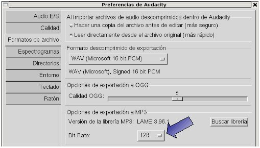

2.4.7. Tono para el móbil
Temporalización: 50 minutos
Archivos necesarios: (hacer clic con el botón derecho del ratón sobre el enlace y guarda el enlace en el disco para poder trabajar con el archivo)
A partir de un sónido vas a crear un tono para el móbil.
Pasos:
1. Abrir el archivo de sonido sonido telefono.mp3 en Audacity.
2. El archivo dura aproximadamente 2 segundos, añade un silencio que dure 1 segundo de forma que en total haya aproximadamente 3 segundos (menú Generar / Silecio).
3. Selecionarlo todo y repetirlo 5 veces.
4. Hacer que el volumen del tono empiece bajo y vaya incrementándos.
5. Exportar el resultado final como MP3 pero cambiando el Bit Rate reduciendola para que ocupe menos en disco. Haz varias pruebas para que tengas una buena relación calidad-tamaño.

El resultado final ha de ser similar a este:
* Recuerda dejar el Bit Rate al valor por defecto (128) para que cuando lo utilices de nuevo guardes en buena calidad
Este artículo está licenciado bajo Creative Commons Attribution-NonCommercial 2.5 License
Formació del Professorat - CEFIRE